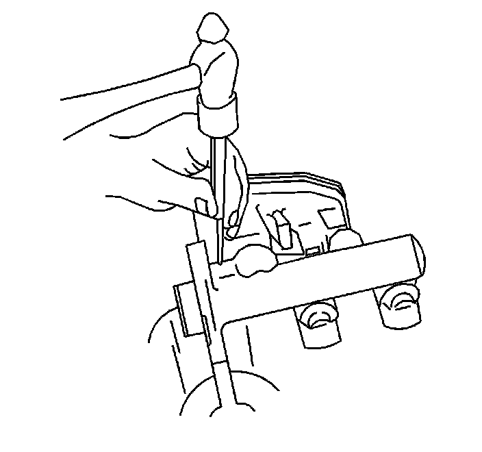
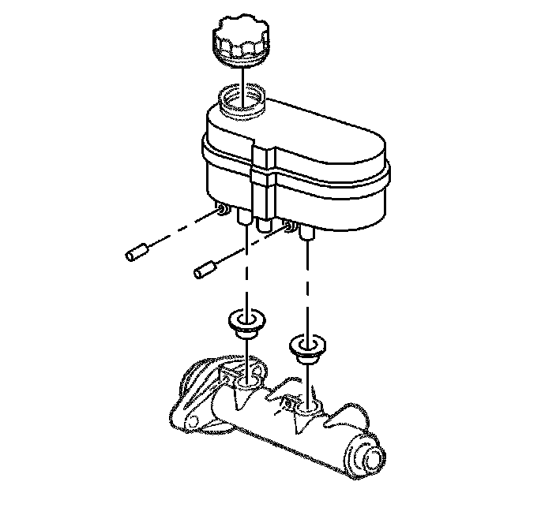

Master Cylinder Reservoir Replacement
Master Cylinder Reservoir Replacement
Caution: Refer to Brake Fluid Irritant Caution (Brake Fluid Irritant Caution) .
Notice: Refer to Brake Fluid Effects on Paint and Electrical Components Notice (Vehicle Damage Warnings) .
Removal Procedure
1. Remove the master cylinder from the vehicle. Refer to Master Cylinder Replacement (Master Cylinder Replacement) .

2. Remove the fluid level sensor. Refer to Brake Fluid Level Indicator Switch Replacement (Service and Repair) .
3. Drain the brake fluid from the master cylinder reservoir.
4. Carefully tap out the reservoir retaining pins until clear of reservoir.
5. Remove the reservoir from the master cylinder.
6. Remove the seals from the master cylinder reservoir.
Installation Procedure
1. Inspect the reservoir for cracks or deformities. If found, replace the reservoir.
2. Clean the reservoir with clean denatured alcohol, or equivalent.
3. Dry the reservoir with non-lubricated, filtered air.

4. Lubricate the new seals and the reservoir bayonets with new Delco Supreme 11(R), GM P/N 12377967 (Canadian P/N 992667) or equivalent DOT-3 brake fluid.
5. Install the seals, making sure they are fully seated.
6. Install the reservoir onto the master cylinder by pressing straight down by hand until pin holes are aligned.
7. Carefully tap in the reservoir retaining pins to secure the reservoir.
8. Fill the master cylinder reservoir. Refer to Master Cylinder Reservoir Filling (Master Cylinder Reservoir Filling) .
9. Install the brake fluid level sensor. Refer to Brake Fluid Level Indicator Switch Replacement (Service and Repair) .
10. Install the master cylinder to the vehicle. Refer to Master Cylinder Replacement (Master Cylinder Replacement) .